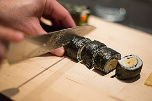

3 volwassenen of 2 volwassenen en 2 kinderen.
45-60 minuten bereidingstijd en 60-120 minuten wachttijd.
De oorsprong van sushi ligt in de conservering van vis door het te laten fermenteren met rijst, wat aan het begin van onze jaartelling in Zuidoost-Azië een gebruikelijke praktijk was. In japan ging men ook al de rijst eten voordat de vis volledig gefermenteerd was. Voor meer informaatie over sushi klik hier.

Eerst moet je de sushirijst wassen met een vergiet.
De rijst is klaar als er geen troep van af komt.
Laat de rijst goed uitlekken.
Nu maak je van de rijstazijn, wijnazijn, suiker en zout een mengsel. Die je kort opwarmt in de magnetron. Roer goed totdat de suiker en het zout zijn opgelost.
Doe de rijst nu in een pan en giet er water over heen. over het algemeen geld voor sushi de volgende regel:voor elk kopje rijst doe je 1,5 kopje water erbij. breng dit aan de kook en laat het 15 minuten zachtjes koken. Het liefst met de deksel er op. Hou de rijst in de gaten en proef af en toe of hij al goed is. Zet dan het vuur uit en laat hem dan 10 minuten na stomen met de deksel er op.
Doe de rijst daarna in een schaal of pan samen met het afgekoelde azijn mengsel en meng dit goed zonder de rijst kapot te roeren. Bedek de schaal daarna met een theedoek totdat je de sushi verder gaat maken.
Nu kunnen we beginnen met het maken van de sushi. pak een schaaltje met water voor je handen en een bord waar je de sushi op kan leggen.
Maak je handen nat en pak een bolletje rijst en rol deze soepel en dan maak je er een rechthoek van. daarna leg je er een plakje zalm of tonijn op.
Sushi rollen maak je iets anders. Pak je bamboe matje en leg er een nori vel op met de gladde kant naar beneden.
En bedek de nori goed met rijst maar laat 1cm leeg aan de zijkant waar hij straks dicht kan.
Maak met de gesneden ingredienten een horizontale rij en begin voorzichtig te rollen. Je kan eigenlijk alles wat je lekker vind in een rol doen.
Met het bamboe matje rol je de sushi op en als hij is opgerold druk je hem stevig aan. snij daarna de rol in plakken met een goed scherp mes.
Wat ook een lekkere variant is, is uramaki sushi.
Je begint hetzelfde en bedekt je nori vel met rijst. Deze strooi je helemaal vol met gebrande sesamzaadje.
Leg een stuk huishoudfolie er op en draai dan alles om zodat de folie en de rijst op het bamboematje komen te liggen.
Je legt dan je gewenste ingrediënten op het nori vel en rolt de sushirol precies zo dicht zoals je het net ook bij de normale rol hebt gedaan.